YOLO总结
前言
YOLO系列的文章在目标检测里边尤其重要，这里对相关系列做一个总结，不做详细讲解
YOLO变体
基本有YOLOv1-8 YOLOX YOLOR
通用的一些数据增强
Mosaic 马赛克
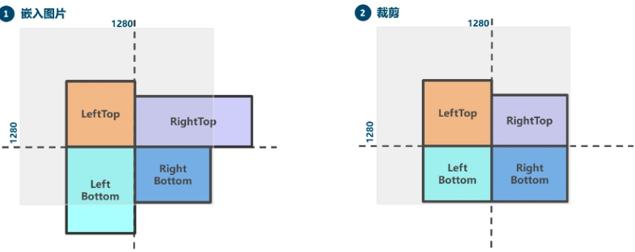 以640x640输入为例，初始化一个1280x1280的目标图，随机选取一个中心点(offset决定点范围)把目标图分成4块,并将图片放入
- 超边界的去掉，label框超边界的截断 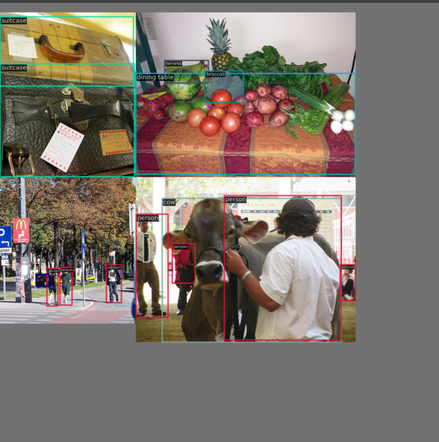
Mosaic 属于混合类数据增强，因为它在运行时候需要 4 张图片拼接，变相的相当于增加了训练的 batch size。其运行过程简要概况为：
随机生成拼接后 4 张图的交接中心点坐标，此时就相当于确定了 4 张拼接图片的交接点
随机选出另外 3 张图片的索引以及读取对应的标注
对每张图片采用保持宽高比的 resize 操作将其缩放到指定大小
按照上下左右规则，计算每张图片在待输出图片中应该放置的位置，因为图片可能出界故还需要计算裁剪坐标
利用裁剪坐标将缩放后的图片裁剪，然后贴到前面计算出的位置，其余位置全部补 114 像素值
对每张图片的标注也进行相应处理
注意：由于拼接了 4 张图，所以输出图片面积会扩大 4 倍，从 640x640 变成 1280x1280，因此要想恢复为 640x640， 必须要再接一个 RandomAffine 随机仿射变换，否则图片面积就一直是扩大 4 倍的。
优点
（1）丰富数据集： 随机使用4张图像，随机缩放后随机拼接，增加很多小目标，大大增加了数据多样性。
（2）增强模型鲁棒性： 混合四张具有不同语义信息的图片，可以让模型检测超出常规语境的目标。
（3）加强批归一化层（Batch Normalization）的效果： 当模型设置 BN 操作后，训练时会尽可能增大批样本总量（BatchSize），因为 BN 原理为计算每一个特征层的均值和方差，如果批样本总量越大，那么 BN 计算的均值和方差就越接近于整个数据集的均值和方差，效果越好。
（4）Mosaic 数据增强算法有利于提升小目标检测性能： Mosaic 数据增强图像由四张原始图像拼接而成，这样每张图像会有更大概率包含小目标，从而提升了模型的检测能力。
Q:为什么不插入到640x640呢？
推测是后续缩小到640x640的时候取值范围会变小，但是估计影响不会大
RandomAffine 随机仿射变换
随机仿射变换有两个目的：
对图片进行随机几何仿射变换
将 Mosaic 输出的扩大 4 倍的图片还原为 640x640 尺寸
随机仿射变换包括平移、旋转、缩放、错切等几何增强操作，同时由于 Mosaic 和 RandomAffine 属于比较强的增强操作，会引入较大噪声，因此需要对增强后的标注进行处理，过滤规则为：
增强后的 gt bbox 宽高要大于 wh_thr
增强后的 gt bbox 面积和增强前的 gt bbox 面积比要大于 ar_thr，防止增强太严重
最大宽高比要小于 area_thr，防止宽高比改变太多
由于旋转后标注框会变大导致不准确，因此目标检测里面很少会使用旋转数据增强。
MixUp
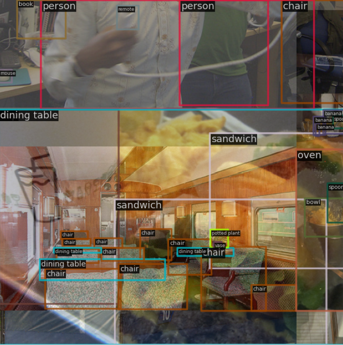 MixUp 和 Mosaic 类似,也属于混合图片类增强方法。随机选出另外一张图后将两图再随机混合。具体实现方法有多种，常见的做法是要么将 label 直接拼接起来，要么将 label 也采用 alpha 方法混合。原作者的做法非常简单，对 label 即直接拼接，而图片通过分布采样混合。
图像模糊等采用 Albu 库实现的变换
HSV 颜色空间增强
随机水平翻转
NMS非极大值抑制
NMS 的本质是搜索局部极大值，抑制非极大值元素。
非极大值抑制，主要就是用来抑制检测时冗余的框。因为在目标检测中，在同一目标的位置上会产生大量的候选框，这些候选框相互之间可能会有重叠，所以我们需要利用非极大值抑制找到最佳的目标边界框，消除冗余的边界框。
算法流程：
1.对所有预测框的置信度降序排序
2.选出置信度最高的预测框，确认其为正确预测，并计算他与其他预测框的 IOU
3.根据步骤2中计算的 IOU 去除重叠度高的，IOU > threshold 阈值就直接删除
4.剩下的预测框返回第1步，直到没有剩下的为止
SoftNMS：
当两个目标靠的非常近时，置信度低的会被置信度高的框所抑制，那么当两个目标靠的十分近的时候就只会识别出一个 BBox。为了解决这个问题，可以使用 softNMS。
它的基本思想是用稍低一点的分数来代替原有的分数，而不是像 NMS 一样直接置零。
YOLOv5
github:https://github.com/ultralytics/yolov5
mmyolo:https://github.com/open-mmlab/mmyolo/blob/main/configs/yolov5/
前言
YOLOv5 有 P5 和 P6 两个不同训练输入尺度的模型，P6 即为 1280x1280 输入的大模型，通常用的是 P5 常规模型，输入尺寸是 640x640 。本文解读的也是 P5 模型结构。

 yolov5没有论文产出，但是整体东西还是很多的，而且库一直在更新，现在很多SOTA的方法依然会应用在上面，且对部署友好
yolov5没有论文产出，但是整体东西还是很多的，而且库一直在更新，现在很多SOTA的方法依然会应用在上面，且对部署友好
数据增强
需要特别注意的是： YOLOv5 实现的 MixUp 中，随机出来的另一张图也需要经过 Mosaic 马赛克 + RandomAffine 随机仿射变换 的增强后才能混合。这个和其他开源库实现可能不太一样。
autoAnchor
YOLOv3、YOLOv4，对于不同的数据集，都会计算先验框 anchor。然后在训练时，网络会在 anchor 的基础上进行预测，输出预测框，再和标签框进行对比，最后就进行梯度的反向传播。
在 YOLOv3、YOLOv4 中，训练不同的数据集时，是使用单独的脚本进行初始锚框的计算，在 YOLOv5 中，则是将此功能嵌入到整个训练代码里中。所以在每次训练开始之前，它都会根据不同的数据集来自适应计算 anchor。
but，如果觉得计算的锚框效果并不好，那你也可以在代码中将此功能关闭:
自适应的计算具体过程：
①获取数据集中所有目标的宽和高。
②将每张图片中按照等比例缩放的方式到 resize 指定大小，这里保证宽高中的最大值符合指定大小。
③将 bboxes 从相对坐标改成绝对坐标，这里乘以的是缩放后的宽高。
④筛选 bboxes，保留宽高都大于等于两个像素的 bboxes。
⑤使用 k-means 聚类三方得到n个 anchors，与YOLOv3、YOLOv4 操作一样。
⑥使用遗传算法随机对 anchors 的宽高进行变异。倘若变异后的效果好，就将变异后的结果赋值给 anchors；如果变异后效果变差就跳过，默认变异1000次。这里是使用 anchor_fitness 方法计算得到的适应度 fitness，然后再进行评估。 自适应图片缩放
就是得到LetterBox
步骤：
根据原始图片大小以及输入到网络的图片大小计算缩放比例
根据原始图片大小与缩放比例计算缩放后的图片大小
计算黑边填充数值
注意：
Yolov5中填充的是灰色，即（114,114,114）。
训练时没有采用缩减黑边的方式，还是采用传统填充的方式，即缩放到416*416大小。只是在测试，使用模型推理时，才采用缩减黑边的方式，提高目标检测，推理的速度。
为什么np.mod函数的后面用32？
因为YOLOv5的网络经过5次下采样，而2的5次方，等于32。所以至少要去掉32的倍数，再进行取余。以免产生尺度太小走不完stride（filter在原图上扫描时，需要跳跃的格数）的问题，再进行取余。
Focus
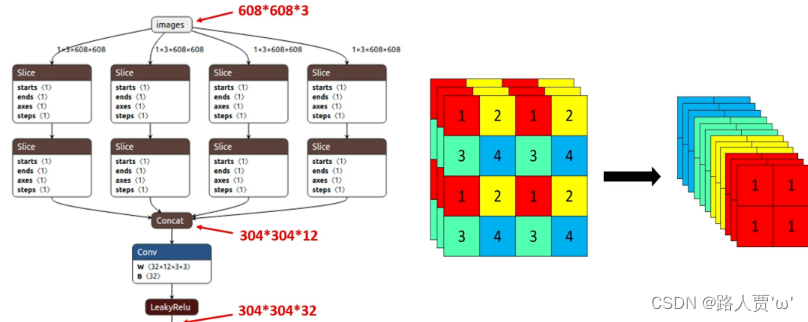 图片进入Backbone前，对图片进行切片操作，具体操作是在一张图片中每隔一个像素拿到一个值，类似于邻近下采样，这样就拿到了四张图片，四张图片互补，长得差不多，但是没有信息丢失，这样一来，将W、H信息就集中到了通道空间，输入通道扩充了4倍，即拼接起来的图片相对于原先的RGB三通道模式变成了12个通道，最后将得到的新图片再经过卷积操作，最终得到了没有信息丢失情况下的二倍下采样特征图。
始的640 × 640 × 3的图像输入Focus结构，采用切片操作，先变成320 × 320 × 12的特征图，再经过一次卷积操作，最终变成320 × 320 × 32的特征图。
好处： 可以使信息不丢失的情况下提高计算力
不足：Focus 对某些设备不支持且不友好，开销很大，另外切片对不齐的话模型就崩了。
后期改进： 在新版中，YOLOv5 将Focus 模块替换成了一个 6 x 6 的卷积层。两者的计算量是等价的，但是对于一些 GPU 设备，使用 6 x 6 的卷积会更加高效。
Backbone
YOLOv4中只有主干网络使用了CSP结构。 而YOLOv5中设计了两种CSP结构，以YOLOv5s网络为例，CSP1_ X结构应用于Backbone主干网络，另一种CSP2_X结构则应用于Neck中。 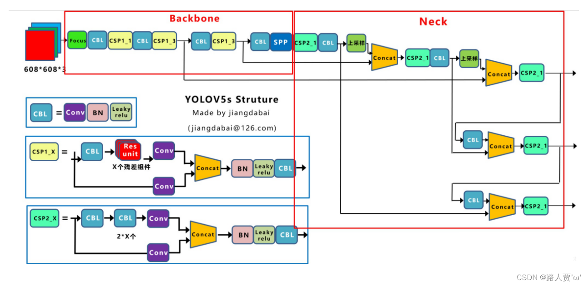
NECK
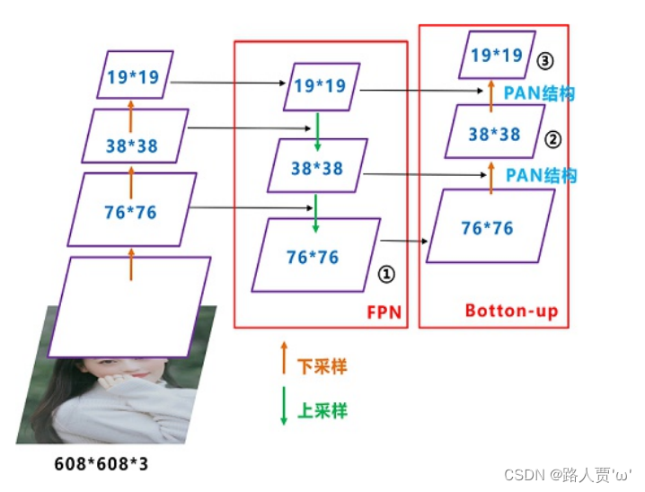 YOLOV5的Neck中，采用CSPNet设计的CSP2结构的PAN，从而加强了网络特征融合能力。
Head
有三个输出：分类头、置信度头、回归头,v5是Couple head
CIOU_LOSS 作为bounding box 的损失函数
训练策略
（1）多尺度训练（Multi-scale training）。 如果网络的输入是416 x 416。那么训练的时候就会从 0.5 x 416 到 1.5 x 416 中任意取值，但所取的值都是32的整数倍。
（2）训练开始前使用 warmup 进行训练。 在模型预训练阶段，先使用较小的学习率训练一些epochs或者steps (如4个 epoch 或10000个 step)，再修改为预先设置的学习率进行训练。
（3）使用了 cosine 学习率下降策略（Cosine LR scheduler）。
（4）采用了 EMA 更新权重(Exponential Moving Average)。 相当于训练时给参数赋予一个动量，这样更新起来就会更加平滑。
（5）使用了 amp 进行混合精度训练（Mixed precision）。 能够减少显存的占用并且加快训练速度，但是需要 GPU 支持。
标签分配
邻域的正样本anchor匹配策略
正负样本匹配策略的核心是确定预测特征图的所有位置中哪些位置应该是正样本，哪些是负样本，甚至有些是忽略样本。 匹配策略是目标检测算法的核心，一个好的匹配策略可以显著提升算法性能。
YOLOV5 的匹配策略简单总结为：采用了 anchor 和 gt_bbox 的 shape 匹配度作为划分规则(只保留宽高比都在0.25~4之间的框)，同时引入跨邻域网格策略来增加正样本。 其主要包括如下两个核心步骤：
对于任何一个输出层，抛弃了常用的基于 Max IoU 匹配的规则，而是直接采用 shape 规则匹配，也就是该 GT Bbox 和当前层的 Anchor 计算宽高比，如果宽高比例大于设定阈值，则说明该 GT Bbox 和 Anchor 匹配度不够，将该 GT Bbox 暂时丢掉，在该层预测中该 GT Bbox 对应的网格内的预测位置认为是负样本
对于剩下的 GT Bbox(也就是匹配上的 GT Bbox)，计算其落在哪个网格内，同时利用四舍五入规则，找出最近的两个网格，将这三个网格都认为是负责预测该 GT Bbox 的，可以粗略估计正样本数相比之前的 YOLO 系列，至少增加了三倍
BBox编码
和以前的编码不同，\(a_{h}\)为anchor的高度，\(c_{x}\)为Grid坐标，\(\sigma\)为Sigmoid
以前的： \[ b_{x} = \sigma(t_{x})+c_{x}\\ b_{y} = \sigma(t_{y})+c_{y}\\ b_{w} = a_{w}\cdot e^{t_{w}}\\ b_{h} = a_{h}\cdot e^{t_{h}}\\ \]
现在的： \[ b_{x} = (2\cdot\sigma(t_{x})-0.5)+c_{x}\\ b_{y} = (2\cdot\sigma(t_{y})-0.5)+c_{y}\\ b_{w} = a_{w}\cdot (2\cdot \sigma{t_{w}})^{2}\\ b_{h} = a_{h}\cdot (2\cdot \sigma{t_{h}})^{2}\\ \]
中心点坐标范围从 (0, 1) 调整至 (-0.5, 1.5)
宽高范围从\((0,+\infty)\)到\((0,4a_{wh})\)
好处： * 新的中心点设置能更好的预测到 0 和 1。这有助于更精准回归出 box 坐标。
- 宽高回归公式中 exp(x) 是无界的，这会导致梯度失去控制，造成训练不稳定。YOLOv5 中改进后的宽高回归公式优化了此问题。
另外中心点的回归方式和标签分配也是对应的 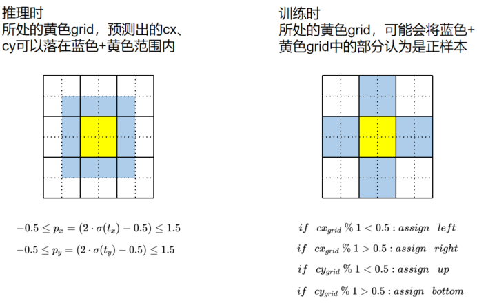 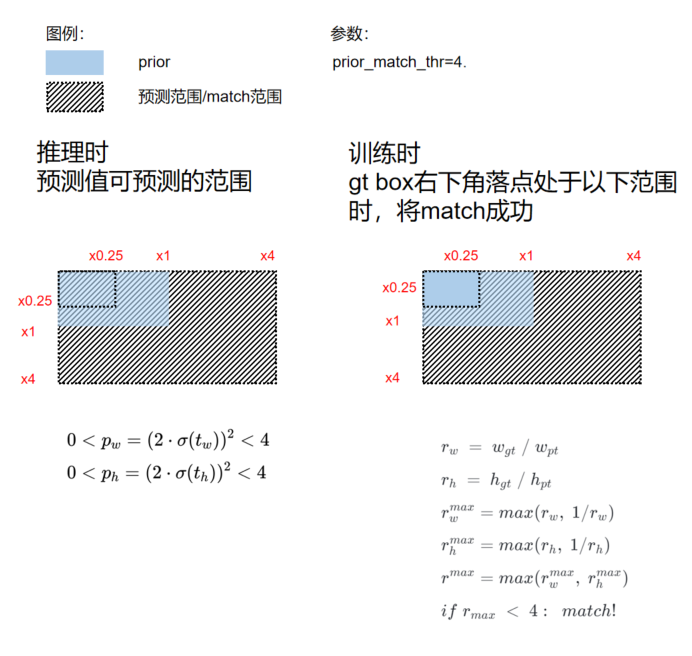
其他Tricks
优化器
将优化参数分成 Conv/Bias/BN 三组，在 WarmUp 阶段，不同组采用不同的 lr 以及 momentum 更新曲线。 同时在 WarmUp 阶段采用的是 iter-based 更新策略，而在非 WarmUp 阶段则变成 epoch-based 更新策略
weight decay自适应
作者针对不同的 batch size 采用了不同的 weight decay 策略，具体来说为：
当训练 batch size <= 64 时，weight decay 不变
当训练 batch size > 64 时，weight decay 会根据总 batch size 进行线性缩放
梯度累加
为了最大化不同 batch size 情况下的性能，作者设置总 batch size 小于 64 时候会自动开启梯度累加功能。
训练过程和大部分 YOLO 类似，包括如下策略：
没有使用预训练权重
没有采用多尺度训练策略，同时可以开启 cudnn.benchmark 进一步加速训练
使用了 EMA 策略平滑模型
默认采用 AMP 自动混合精度训练
需要特意说明的是：YOLOv5 官方对于 small 模型是采用单卡 v100 训练，bs 为 128，而 m/l/x 等是采用不同数目的多卡实现的， 这种训练策略不太规范，为此在 MMYOLO 中全部采用了 8 卡，每卡 16 bs 的设置，同时为了避免性能差异，训练时候开启了 SyncBN。
后处理
其推理和后处理过程为：
- 维度变换
YOLOv5 输出特征图尺度为 80x80、40x40 和 20x20 的三个特征图，每个位置共 3 个 anchor，因此输出特征图通道为 3x(5+80)=255。 YOLOv5 是非解耦输出头，而其他大部分算法都是解耦输出头,原先的通道维度置换到最后，类别预测分支、bbox 预测分支和 obj 预测分支的 shape 分别为 (b, 3x80x80+3x40x40+3x20x20, 80)=(b,25200,80)，(b,25200,4)，(b,25200,1)。
- 解码还原到原图尺度
分类预测分支和 obj 分支需要进行 sigmoid 计算，而 bbox 预测分支需要进行解码，还原为真实的原图解码后 xyxy 格式
- 第一次阈值过滤
遍历 batch 中的每张图，然后用 score_thr 对类别预测分值进行阈值过滤，去掉低于 score_thr 的预测结果
- 第二次阈值过滤
将 obj 预测分值和过滤后的类别预测分值相乘，然后依然采用 score_thr 进行阈值过滤。 在这过程中还需要考虑 multi_label 和 nms_pre，确保过滤后的检测框数目不会多于 nms_pre。
- 还原到原图尺度和 nms
基于前处理过程，将剩下的检测框还原到网络输出前的原图尺度，然后进行 nms 即可。最终输出的检测框不能多于 max_per_img。
总结
YOLOv5和别人不一样的地方有：
Focus(后面变成了6x6Conv)
两个CPS
解码方式变了
标签分配不是hard label
马赛克+仿射变换+Mixup+hsv增强+Albu+随机水平翻转
优化器分组
EMA+Warmup+梯度累加+自适应decay
Bbox编码
cos衰减、多尺度训练
letter box
参考
YOLOv8

简介
v8和v5是同一个作者，目前支持图像分类、物体检测和实例分割任务，在还没有开源时就收到了用户的广泛关注。
按照官方描述，YOLOv8 是一个 SOTA 模型，它建立在以前 YOLO 版本的成功基础上，并引入了新的功能和改进，以进一步提升性能和灵活性。具体创新包括一个新的骨干网络、一个新的 Ancher-Free 检测头和一个新的损失函数，可以在从 CPU 到 GPU 的各种硬件平台上运行。 不过 Ultralytics 并没有直接将开源库命名为 YOLOv8，而是直接使用 Ultralytics 这个词，原因是 Ultralytics 将这个库定位为算法框架，而非某一个特定算法，一个主要特点是可扩展性。其希望这个库不仅仅能够用于 YOLO 系列模型，而是能够支持非 YOLO 模型以及分类分割姿态估计等各类任务。 总而言之，Ultralytics 开源库的两个主要优点是：
融合众多当前 SOTA 技术于一体
未来将支持其他 YOLO 系列以及 YOLO 之外的更多算法
训练策略
由于是v5改进的，所以总体训练策略没变，区别在于 epoch 数从 300 提升到了 500
数据增强是：Mosiac--->Random Affine--->MixUP--->albumentations(optional)--->HSVAugment--->Horizontal Flip,在最后10个epoch会把马赛克、MixUP关掉（YOLOv6也提到了加会边会增加推理速度，不加会影响性能，猜测是因为马赛克引起的）
DFL
YOLOv8的输出使用了的是DFL，即把一个回归问题变成了分类问题，但相应的速度会慢一点
模型结构设计
骨干网络和 Neck 的具体变化为：
第一个卷积层的 kernel 从 6x6 变成了 3x3
所有的 C3 模块换成 C2f，结构如下所示，可以发现多了更多的跳层连接和额外的 Split 操作,c3里边split左边上边的都是split的结果（使用split固然可以减少计算量，但是对部署有时候并不是特别友好）
Head 部分变化最大，从原先的耦合头变成了解耦头，并且从 YOLOv5 的 Anchor-Based 变成了 Anchor-Free。不再有之前的 objectness 分支，只有解耦的分类和回归分支，并且其回归分支使用了 Distribution Focal Loss 中提出的积分形式表示法。
通道设置
N/S 和 L/X 两组模型只是改了缩放系数，但是 S/M/L 等骨干网络的通道数设置不一样，没有遵循同一套缩放系数。如此设计的原因应该是同一套缩放系数下的通道设置不是最优设计，YOLOv7 网络设计时也没有遵循一套缩放系数作用于所有模型
Loss
计算过程包括 2 个部分： 正负样本分配策略和 Loss 计算。 现代目标检测器大部分都会在正负样本分配策略上面做文章，典型的如 YOLOX 的 simOTA、TOOD 的 TaskAlignedAssigner 和 RTMDet 的 DynamicSoftLabelAssigner，这类 Assigner 大都是动态分配策略，而 YOLOv5 采用的依然是静态分配策略。考虑到动态分配策略的优异性，YOLOv8 算法中则直接引用了 TOOD 的 TaskAlignedAssigner。 TaskAlignedAssigner 的匹配策略简单总结为： 根据分类与回归的分数加权的分数选择正样本。
\[t = s^{\alpha}\times u^{\beta}\] s 是标注类别对应的预测分值，u 是预测框和 gt 框的 iou，两者相乘就可以衡量对齐程度。
对于每一个 GT，对所有的预测框基于 GT 类别对应分类分数，预测框与 GT 的 IoU 的加权得到一个关联分类以及回归的对齐分数 alignment_metrics
对于每一个 GT，直接基于 alignment_metrics 对齐分数选取 topK 大的作为正样本Loss 计算包括 2 个分支： 分类和回归分支，没有了之前的 objectness 分支。
分类分支依然采用 BCE Loss
回归分支需要和 Distribution Focal Loss 中提出的积分形式表示法绑定，因此使用了 Distribution Focal Loss， 同时还使用了 CIoU Loss
3 个 Loss 采用一定权重比例加权即可。
总结
Anchor free+BCE+CIOU
去掉objectness
TAL
backbone和Neck的c2f
针对性的通道设置
最后10epoch关闭马赛克和mixup
节藕头+DFL
YOLOv6
之前写了一个详解了，有兴趣的可以参考：yolov6详解
ATSS
ATSSAssigner 是 ATSS 中提出的标签匹配策略。 ATSS 的匹配策略简单总结为：通过中心点距离先验对样本进行初筛,然后自适应生成 IoU 阈值筛选正样本。 YOLOv6 的实现种主要包括如下三个核心步骤：
因为 YOLOv6 是 Anchor-free，所以首先将 anchor point 转化为大小为 5*strdie 的 anchor。
对于每一个 GT，在 FPN 的每一个特征层上， 计算与该层所有 anchor 中心点距离(位置先验)， 然后优先选取距离 topK 近的样本，作为 初筛样本。
对于每一个 GT，计算其 初筛样本 的 IoU 的均值 mean与标准差 std，将 mean + std 作为该 GT 的正样本的 自适应 IoU 阈值 ，大于该 自适应阈值 且中心点在 GT 内部的 anchor 才作为正样本，使得样本能够被 assign 到合适的 FPN 特征层上。
YOLOv7
论文：YOLOv7: Trainable bag-of-freebies sets new state-of-the-art for real-time object detectors
github：mirrors_WongKinYiu_yolov7
v7模型细节推荐看这里
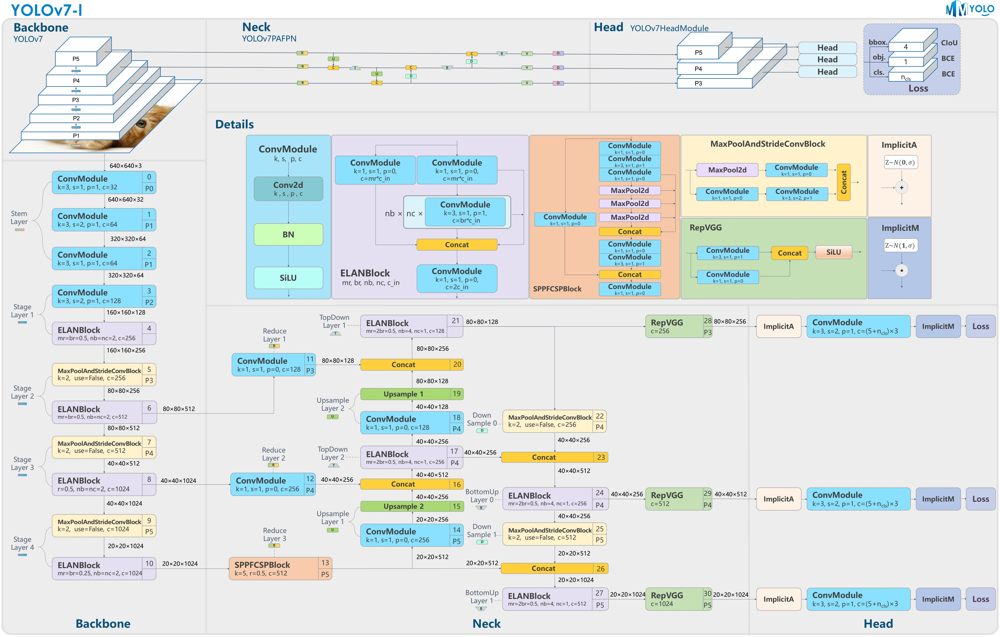 主要贡献:
(1)提出了几种可用于训练的方法，这些方法仅仅会增加训练上的负担用于提升model性能，而不会增加推理负担
(2)对于目标检测方法的发展，作者发现了两个新问题：
①重参数化模块如何替换原始模块 ②动态标签分配策略如何处理对不同输出层的分配 不过本文提出了解决这俩问题的方法
(3)作者针对目标检测可以更有效的利用参数和计算问题，提出了"扩展"(extend)和“复合缩放”(compound scaling)
(4)提出的方法可以有效的减少40%参数量和50%计算量，高精度高速度
Model re-parameterization 重参优化
定义：在训练时将一个模块拆分为多个相同或不同的模块分支；在推理时将多个分支模块整合为一个完全等效的模块。
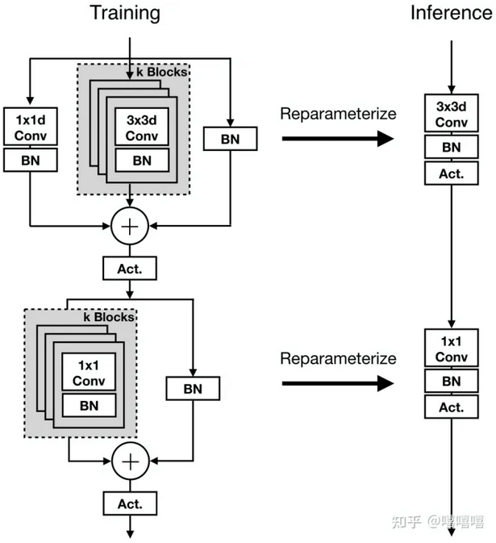 模型级别的重新参数化有两种常见的做法来获得最终的推理模型。一种是用不同的训练数据训练多个相同的模型，然后对多个训练模型的权重进行平均。 另一种是对不同迭代次数的模型权重进行加权平均。
并不是所有提出的重新参数化模块都可以完美地应用于不同的架构。
RepConv中带有的 identity connection破坏了ResNet中的残差和DenseNet中的concatenation，而我们知道残差和concatenation为不同的特征图提供了更多的梯度多样性，这样一来会导致精度下降。所以当一个带有残差或concatenation的卷积层被重参数的卷积所取代时，应该不存在 identity connection
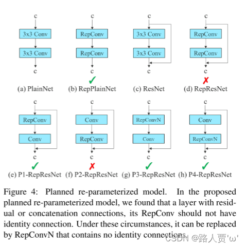 如图，针对不同的网络结构设计了不同的重参模块
结构改进
型缩放方法通常使用不同的缩放因子，例如分辨率（输入图像的大小）、深度（层数）、宽度（通道数）和阶段（特征金字塔的数量），以实现良好的权衡
NAS 可以自动从搜索空间中搜索到合适的缩放因子，而无需定义过于复杂的规则。 NAS 的缺点是需要非常昂贵的计算来完成对模型缩放因子的搜索。
现状： 几乎所有模型缩放方法都独立分析单个缩放因子，甚至复合缩放类别中的方法也独立优化缩放因子。 这样做的原因是因为大多数流行的 NAS 架构处理的比例因子不是很相关。
- 需要注意的是，图里的partial我先前以为是对通道进行split，实际上看了源码是用1x1的Conv进行通道缩放
问题：我们观察到，所有基于连接的模型，例如 DenseNet 或 VoVNet，都会在缩放此类模型的深度时改变某些层的输入宽度。
解决：由于提出的架构是基于串联的我们必须为此模型设计一种新的复合缩放方法。 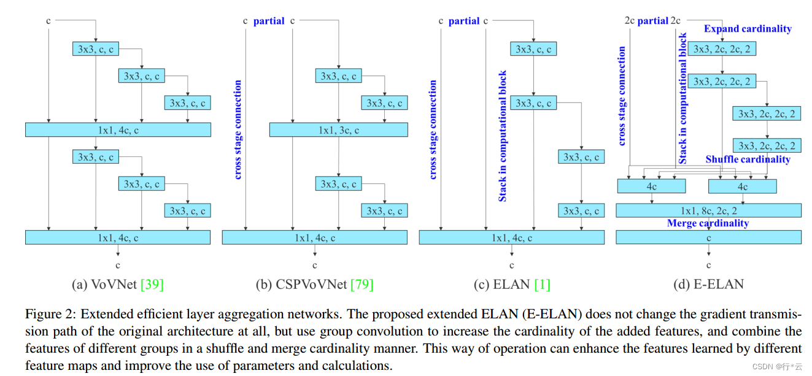
(a)VoVNet是一个基于连接的模型，由OSA组成，将 DenseNet 改进的更高效，区别于常见的plain结构和残差结构。这种结构不仅继承了 DenseNet 的多感受野表示多种特征的优点，也解决了密集连接效率低下的问题。
(b)CSPVoVNet是(a)的CSP变体，CSPVoVNet除了考虑到参数量、计算量、计算密度、ShuffleNet v2提出的内存访问成本(输入输出通道比，架构分支数量，element-wise等)，还分析了梯度路径，可以让不同层的权重学习到更具有区分性的特征。
(c)就“如何设计一个高效的网络”得出结论：通过控制最短最长的梯度路径，更深的网络可以更有效地学习和收敛。 1
2
3
4
5
6
7
8
9
10梯度路径设计策略总共有3个优点：
1. 可以有效地使用网络参数 ，在这一部分中提出通过调整梯度传播路径，不同计算单元的权重可以学习各种信息，从而实现更高的参数利用效率
2. 具有稳定的模型学习能力，由于梯度路径设计策略直接确定并传播信息以更新权重到每个计算单元，因此所设计的架构可以避免训练期间的退化
3. 具有高效的推理速度，梯度路径设计策略使得参数利用非常有效，因此网络可以在不增加额外复杂架构的情况下实现更高的精度。
由于上述原因，所设计的网络在架构上可以更轻、更简单。
梯度路径设计策略有1个缺点：
1. 当梯度更新路径不是网络的简单反向前馈路径时，编程的难度将大大增加。
在架构方面，E-ELAN 只改变了计算块(computation blocks)的架构，而过渡层(transition layer)的架构完全没有改变。 1
2
3首先，使用组卷积来增大通道和计算块的基数 (所有计算块使用的组参数及通道乘数都相同)
接着，将计算块得到的特征图 shuffle 到 g 个组，然后 concat，这样一来每个组中的特征图通道数和初始结构的通道数是相同的
最后，将 g 个组的特征都相加
EELAN实际就等效于两个ELAN，只在yolov7e6e出现,
For E-ELAN architecture, since our edge device do not support group convolution and shuffle operation, we are forced to implement it as an equivalence architecture.
https://blog.csdn.net/weixin_43799388/article/details/126314633
https://zhuanlan.zhihu.com/p/586922724
Model scaling—模型缩放
对于基于串联的模型，我们不能单独分析不同的缩放因子，而必须一起考虑。 我们缩放一个计算块的深度因子时，我们还必须计算该块的输出通道的变化。
当对深度进行放大或缩小时，后续网络层的输入width发生变化，使后续层的输入channel和输出channel的ratio发生变化，紧接在基于连接的计算块之 后的转化层(translation layer)的入度将减小或增加，从而导致模型的硬件使用率下降如图(a)->(b)的过程。
提出了一种复合模型方法，在考虑计算模块深度因子缩放的同时也考虑过渡层宽度因子做同等量的变化,当对连接结构的网络进行尺度缩放时，只缩放计算块的深度，转换层的其余部分只进行宽度的缩放
辅助训练
引入了辅助头，类似于深度监督的信息，在PAN中间层也加一个检测头，但是会放松要求
Label assigner— 标签分配器
作者提出一个“label assigner(标签分配器)” 机制，该机制将网络预测结果与GT一起考虑，然后分配soft label
关于hard label和soft label：
hard label：有些论文中也称为hard target ，其实这也是借鉴了知识蒸馏的思想，hard字面意思上就可以看出比较强硬，是就是，不是就是不是，标签形式：(1,2,3...)或(0,1,0,0...)【举个栗子：要么是猫要么是狗】
soft label：soft是以概率的形式来表示。可理解为对标签的平滑也即软化，比如像[0.6,0.4]，【举个栗子：有60%的概率是猫， 40%的概率是狗】，就好像不会给你非常明确的回答。
现在比较流行的结构中，经常会将网络输出的数据分布通过一定的优化方法等与GT进行匹配生成soft label（其实我们熟悉的经过softmax的或者sigmod输出就是一种soft label）。
其他Tricks
- EMA
EMA 是一种在 mean teacher 中使用的技术，在我们的系统中，我们使用 EMA 模型纯粹作为最终的推理模式
- YOLOR中的隐式知识与卷积特征图以及加法和乘法方式相结合
YOLOR中的隐式知识可以在推理阶段通过预计算简化为向量。 该向量可以与前一个或后一个卷积层的偏差和权重相结合。
- conv-bn-activation 结构组合中的批量归一化
这部分主要将batch normalization layer直接连接到convolutional layer。这样做的目的是在推理阶段将批归一化的均值和方差整合到卷积层的偏差和权重中。
总结
v5同款标签分配+解码方式
马赛克+仿射变换+Mixup+hsv增强+Albu+随机水平翻转
优化器分组
EMA+Warmup+梯度累加+自适应decay
辅助头+粗分配
后续加了ATSS、Anchor based
Conv+BN融合
ELAN、E-ELAN
带残差的重参结构分析
模型缩放应该怎么算
Implicit Knowledge Learning